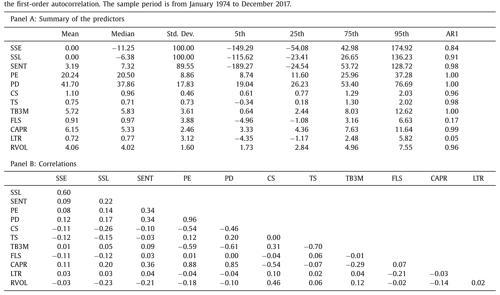
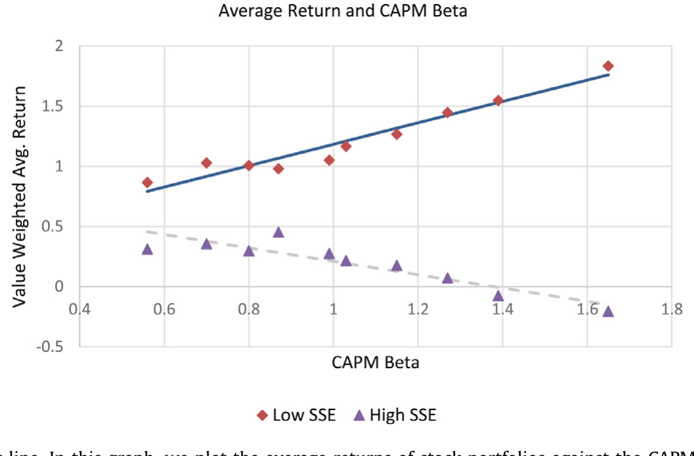
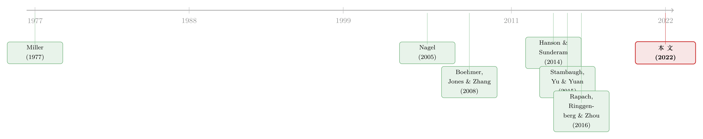

把卖空看成一次「投票」：钱投得准不准，藏着市场下个月的方向
本文读的是 Chen, Da & Huang (2022, JFE)：作者提出一个叫「卖空效率」(short selling efficiency, SSE) 的月度指标——把每只股票的异常卖空对它的「高估分数」做横截面回归，那条斜率就是 SSE。它显著、稳健、且样本内外都能负向预测整个股市的未来收益（月度系数 −0.61，t = −3.50）。换句话说：当卖空者把子弹打在了「对的股票」上，市场的错误定价正在被纠正，未来的市场收益也就被提前透支了。
1 引言：卖空者赌对了，然后呢？
先讲一个大家都同意的事实：卖空（short selling）是有信息的。从 Boehmer, Jones & Zhang (2008) 到 Engelberg, Reed & Ringgenberg (2012)，一长串横截面研究反复确认——被卖空多的股票，未来跌得多。卖空者，至少在平均意义上，是聪明钱。
接着，一个自然的问题是：既然卖空在横截面上能预测个股，那它在时间序列上、对整个市场呢？Rapach, Ringgenberg & Zhou (2016) 给了一个漂亮的答案——把所有股票的卖空加总成一个「卖空水平」(short selling level, SSL)，它能负向预测股权溢价，作者甚至断言它「大概是迄今发现的最强的股权溢价预测变量」。
故事似乎到这儿就该结束了。但本文作者停下来，问了一个看似吹毛求疵、实则要害的问题：
同样是「市场上总共卖空了 1000 万股」，这 1000 万股，是被精准地砸在了最被高估的那批股票上，还是均匀地、甚至错误地撒在了一堆本就便宜的股票上？总量一样，后果能一样吗？
这正是全文的「核心张力」：总量（SSL）只告诉你卖空者有多想做空，却没告诉你他们做空得有多准。 而真正能纠正错误定价、进而预示市场下一步走向的，恰恰是后者——卖空者把钱投得准不准。本文把这件「准不准」的事，做成了一个可度量、可预测的时间序列变量。
2 一个朴素却关键的想法：卖空，要看「卖在哪」
怎么度量「准不准」？作者的做法朴素得近乎优雅。每个月 t，把所有股票拉到一张横截面上，做一个回归：被解释变量是异常卖空 (abnormal short interest, ASI)，解释变量是错误定价分数 (mispricing score, MISP)。
这里每一块都值得拆开看。
异常卖空 ASI：仿照 Chen et al. (2019)，先把每只股票当月卖空股数除以流通股数，得到卖空比例，再减去它过去 12 个月的均值——目的是剥掉个股层面的趋势，留下「本月相对异常」的那一部分。
错误定价 MISP：直接搬来 Stambaugh, Yu & Yuan (2015) 的综合指标——用 11 个经典异象（财务困境、净股票发行、应计、动量、毛利率、资产增长……）合成的百分位排名，1 到 100，越高越被高估。本文把它去均值并重标度，于是它在每个横截面上均匀分布在 −0.5（最被低估）到 0.5（最被高估）之间。
现在看那条回归。截距 a_t 是异常卖空的横截面均值——它就是 SSL，「市场总共做空了多少」。而斜率 b_t，因为 MISP 已经去了均值，本质上等于「砸在高估股票上的卖空 减去 砸在低估股票上的卖空」。斜率越大，说明卖空越是对准了该做空的标的。这条斜率，就是 SSE。
把这个回归每个月重做一遍，斜率序列 {b_t} 就成了一个时间序列——一个关于「这个月卖空者打得准不准」的月度温度计。
一句话：SSE 是「卖空的方向感」，SSL 是「卖空的力气」。 力气大不代表方向准；而能纠正错误定价、预示市场掉头的，是方向。
3 反转：为什么「方向」比「力气」更干净？
到这里你可能会想：SSE 不就是 SSL 的一个变体吗？它俩相关系数 0.60，听上去像同一件事的两种说法。
但真正关键的一步，是作者点出 SSE 有一个 SSL 天生没有的优点——它能抵消噪声。
现实里，并非所有卖空都是冲着「这只股票被高估了」去的。有人做空只是为了对冲手里的可转债、期权或 ETF 头寸；有人做空是因为可借股票的供给变了。把这些「与高估无关」的卖空一股脑当成看空信号，会给 SSL 注入正向噪声，污染它作为「总体高估」代理变量的纯度。
而 SSE 妙就妙在：只要这些噪声与错误定价分数不相关，它们就会在高估股票和低估股票上「同样地」出现——于是在那条斜率回归里，正负相抵，被干净地约掉了。SSL 约不掉，SSE 能约掉。这是个概念上的差别，作者也用一个附录里的简化模型把它讲圆了。
实证上，作者还顺手验了一刀：SSE 与「机构持股」（卖空供给侧的代理）的相关性，比 SSL 低；而且即便在横截面里控制了机构持股，SSE 对市场收益的预测力依然显著。这说明 SSE 抓住的，不是「能借到多少券」这种供给故事，而是真正投向高估的那部分卖空资本。
（关于「聪明钱到底在不在卖空里、又把异象收益推动了多少」，可参见《买卖双方各执一词：当 193 个异象告诉你「谁是聪明钱」》与《异象收益究竟是谁推动的？》。）
4 识别策略与数据
这是一篇收益可预测性的论文，识别靠的是预测回归而非自然实验，所以要害在「数据干净、稳健性扎实」。
数据。 卖空数据来自 Compustat Short Interest File，覆盖 NYSE/AMEX/NASDAQ 的月度卖空（NASDAQ 2003 年前的数据直接从交易所补齐）。错误定价用 Stambaugh et al. (2015) 的 11 异象综合指标。样本期 1974 年 1 月到 2017 年 12 月。基准分析剔除微小市值股与价格低于 5 美元的股票；卖空取每月月中的快照，以确保它落在投资者形成「下月预期」时的信息集里。
预测对象。 月度的市值加权市场超额收益（减去一个月期 T-bill）。
两个处理细节。 其一，自 1970 年代起卖空整体在上升（对冲基金崛起，如今约 80% 的卖空由对冲基金完成），所以 SSE 和 SSL 都有趋势——作者仿照 Rapach et al. (2016) 去趋势并标准化（不去趋势结论也不变）。其二，SSE 一阶自相关 0.84，SSL 为 0.91，都相当持久——这一点在评判长期回归的 R² 时要格外当心（后面会展开）。
表 1 是全景：SSE 与 SSL 标准差都被标准化到 100，但它俩并不重合；与一众经典预测变量（情绪 SENT、市盈率 PE、信用利差 CS、期限利差 TS……）的相关性也都不高，预示着 SSE 携带的是独立信息。

Table 1
5 主要结果：投得越准，市场越快见顶
核心结果。 把未来市场超额收益对当月 SSE 做回归：
- 月度：系数
−0.61，t = −3.50，R² = 1.64%； - 12 个月：系数
−0.40，t = −3.69，R² = 8.49%。
负号正是故事的全部。SSE 高，意味着卖空者这个月精准地把资本砸在了高估股票上——而高 SSE 之所以出现，是因为市场整体偏贵、被高估的股票更多、聪明的卖空者于是更使劲地对准它们（呼应 Hanson & Sunderam, 2014 的直觉）。两股力量叠加，推高了 ASI 与 MISP 的协方差，也就是 SSE。所以高 SSE 既是「今天市场偏贵」的信号，也预示「明天市场收益偏低」。
更妙的是时间结构：预测力在短期最强，随期限拉长而衰减。这恰恰符合「高效卖空 = 活跃套利 = 快速纠错」的逻辑——错误定价被抓住后，纠正得很快，市场也很快把未来收益兑现掉。
它没有被 SSL 吃掉。 同时放进 SSL 和一众其他预测变量后，SSE 依旧显著——它装的不是「卖空力气」，是「卖空准度」。样本外检验（Campbell & Thompson, 2008；Goyal & Welch, 2008 的范式）也确认 SSE 击败了「历史均值」这个出了名难超越的基准，且对加上经济约束（限定股权溢价的符号与取值）后依然稳健。作者还做了一长串稳健性：换一种 SSE 算法、换去趋势方式、纳入微小市值股、控制其他卖空驱动因素、剔除金融危机、bootstrap……结论不动。
12 个月那个 8.49% 的 R² 看着很大，但别被吓到——SSE 自相关高达 0.84，叠加重叠样本，长期预测回归的 R² 和 t 值天然会被夸大。这不是本文独有的毛病，是整条文献的通病（关于这道小样本陷阱，详见《用更多的数据，买来更大的偏差》）。月度那个 −3.50 的 t 值要可信得多。
6 一个意外的彩蛋：SSE 与 CAPM 何时「灵验」
如果 SSE 真的标记了「套利在活跃、错误定价在被纠正」，那它应该和市场有效性挂上钩。作者于是把 SSE 和资本资产定价模型 (CAPM) 的表现对照起来看，得到全文最漂亮的一张图。
做法是：按市场 beta 把股票分成十组，画出「平均收益对 beta」的证券市场线 (security market line, SML)。结果——
- 在低 SSE之后的月份里，SML 显著向上倾斜，斜率
0.89（t = 11.09），CAPM 灵验、市场有效； - 在高 SSE之后的月份里，SML 反而向下倾斜。

Figure 3: SSE and the security market line. In this graph, we plot the average returns of stock portfolios against the CAPM beta (i.e., the security m
这个反转初看反直觉，细想却顺理成章：高 SSE 意味着此刻错误定价正盛、套利者正忙着纠错，市场尚未「干净」，所以 beta 与收益脱节；而低 SSE 之后，纠错已基本完成，市场回到 CAPM 描述的有效状态，beta 才重新「定价」。这与近年「CAPM 只在特定时点灵验」的发现一脉相承——宏观公告日（Savor & Wilson, 2014）、低情绪期（Antoniou et al., 2016）、低保证金要求时（Jylha, 2018）。本文给这份清单添了新的一条：低 SSE 之后。
（关于 CAPM 的 beta 异象为何「看天吃饭」，可对照《波动率之谜，藏在 beta 异象的「时机」里》与《时变的 beta，被低估了二十年的风险》。）
此外，预测力在衰退期、高波动期、低公开信息期最强——这与 Kacperczyk, Van Nieuwerburgh & Veldkamp (2016) 的论点合拍：当总体风险冲击更剧烈、公开信息更稀缺时，信息处理（也就是卖空者的「找高估」本领）最值钱。
7 文献脉络
这条线的源头，是 Miller (1977) 那个古老的洞见——当存在卖空约束、又有意见分歧时，价格会被乐观者绑架、偏向高估。于是「卖空 = 纠正高估的力量」成了整条文献的母题。
接着是横截面的黄金年代：Nagel (2005)、Boehmer, Jones & Zhang (2008)、Engelberg, Reed & Ringgenberg (2012)，一篇篇坐实了「被卖空多的股票、被卖空者盯上的股票，未来收益更差」——卖空者是有信息的。Hanson & Sunderam (2014) 更进一步，从卖空利益里读出了套利资本的多寡与「成长与极限」。

横截面讲透了，时间序列才刚开始。Stambaugh, Yu & Yuan (2015) 用 11 个异象造出了那把「错误定价的尺子」MISP；Rapach, Ringgenberg & Zhou (2016) 则把卖空加总，证明「总量」能预测股权溢价。本文站在这两块基石上，做了一件前人没做的事：把卖空的「数量」与「位置」合在一起，第一次把「卖空的处置（disposition）」与整个市场的价格走向连了起来。它既是 Rapach et al. (2016) 的延伸，又是对它的修正——总量重要，但总量去了哪里，更重要。
8 评论与延伸（Q&A + 研究方向）
(a) 几个可能的疑问
Q：SSE 不就是 SSL 加了个权重吗，凭什么说它「不同」？
关键在去均值。MISP 去均值后，SSE 等于「高估股票上的卖空 − 低估股票上的卖空」，于是与错误定价无关的对冲性/供给性卖空噪声在两端相抵、被约掉；SSL 是横截面均值，约不掉这些噪声。两者相关
0.60但并不重合，控制了 SSL 后 SSE 仍显著。
Q：负号会不会只是「市场贵→未来收益低」的老套故事，跟卖空没关系？
部分是，但不全是。高 SSE 确实标记了「今天偏贵」，可它同时携带了 SSL 与一众估值/宏观预测变量装不下的增量信息（控制后仍显著、样本外胜过历史均值）。它多出来的那块，是「套利者此刻有多活跃、纠错有多快」——这从「短期预测力最强、SML 反转」两个独立证据上能看出来。
Q：R² = 8.49% 是不是好得不真实？
对长期、重叠、强自相关（AR1=0.84）的预测回归，
R²和t系统性偏高，是文献公认的小样本陷阱。该数字别单独信，要看它和月度−3.50、以及样本外检验、bootstrap 是否一致——本文这几样都做了，算扎实。
Q：卖空者「打得准」，会不会只是因为他们借得到券（供给好）？
作者专门排查过：SSE 与机构持股（卖空供给侧代理）的相关性低于 SSL，且控制机构持股后 SSE 仍显著。这说明 SSE 抓的是「投向高估的卖空资本」，而非「能借到多少券」。
Q：为什么低 SSE 之后 CAPM 反而灵验，这不矛盾吗？
不矛盾。高 SSE = 错误定价正盛、套利者正在场内拔河，市场未达有效，beta 与收益脱节；低 SSE = 纠错已基本完成，市场回到有效，beta 重新被定价、SML 上斜（斜率 0.89, t=11.09）。SSE 低，恰恰是「市场已经被打扫干净」的信号。
Q：MISP 用的是滞后异象，会不会有前视偏误？
基本没有。11 个异象里除了「财务困境」可能用到当月信息，其余 10 个都用月前信息构造；卖空取月中快照，所以 SSE 主要反映卖空者对错误定价的反应。作者也用滞后一期 MISP 重算过，结论不变（因 MISP 个股层面高度持久）。
(b) 几个可能的研究问题与提案
1. 把 SSE 搬到公司债/信用市场。 【经济故事】公司债同样有「错误定价 + 做空摩擦」，而信用市场的卖空（或 CDS 买入）更稀缺、更受约束。一个「信用市场版 SSE」——把异常 CDS 净买入对债券错误定价分数做横截面回归——也许能预测信用利差的总体走向。 【可行性】中。需 Markit CDS、TRACE 债券价格、以及一套债券层面的错误定价度量（这步最难，需自建）。识别同属预测回归，干净度受限于错误定价代理的质量。
2. 外资持有人会让 SSE 变「钝」吗？ 【经济故事】若某些股票的边际投资者是受约束、慢反应的外资被动持有人，套利者纠错会更慢，SSE 对未来收益的预测期限可能被拉长。 【可行性】中。需 13F + Factset/EPFR 的外资持股，按外资持股比例做条件分组的预测回归。识别靠横截面异质性，doable，但外资持股的内生性需小心。
3. SSE 与流动性供给的交互。 【经济故事】卖空者纠错的速度，应取决于做市与流动性供给是否充裕；流动性枯竭时，高 SSE 也许「投得准却纠不动」，预测期限被拉长。 【可行性】高。流动性指标现成（Amihud、价差），把 SSE 与流动性状态交乘进预测回归即可。纯时间序列，最容易落地。
4. 把 SSE 拆成「真套利」与「对冲性噪声」。 【经济故事】本文论证噪声被约掉了，但若能直接把卖空按动机（套利 vs. 可转债/期权对冲）分离，就能验证「只有套利那部分驱动了预测力」这一机制。 【可行性】低到中。识别动机需可转债持仓、期权未平仓等辅助数据来「剥离对冲性卖空」，数据拼接难，但机制检验价值高。
我的判断
贡献。 本文最漂亮的地方，是一个「显而易见却被所有人略过」的想法：卖空不该只数多少，还要看打在哪。把数量与位置压进一条横截面回归的斜率，既继承了 Rapach et al. (2016)，又用「噪声相抵」给出了一个概念上更干净的指标。SML 反转那张图，更是把一个抽象的预测变量，落到了「市场何时有效」这个最根本的问题上——这是全文的画龙点睛。
对识别的担忧。 说到底这仍是预测回归，所有此类工作的老问题它都逃不掉：强自相关下长期 R² 被夸大、样本期内可能有结构性变化、44 年里卖空制度（如 2008 禁空令）几经更迭。月度结果可信，长期的我会打个折。SSE 与 SSL 0.60 的相关也提醒我们，二者的「增量」虽显著，但边际信息量有限。
后续想看。 我最想看到两件事：一是把 SSE 推到信用市场和外资持有人的场景里去，检验「投得准」的逻辑在更分割、更受约束的市场是否更强、预测期限是否更长；二是用更细的卖空动机数据，直接把「真套利」从「对冲性噪声」里剥出来，给本文那个「噪声被约掉」的核心机制做一次硬碰硬的检验。若这两步都成立，SSE 就不只是又一个预测变量，而是一把丈量「套利活跃度」的通用尺子。
（关于收益可预测性为何始终是资产定价的中心议题，仍推荐回到那篇纲领性的《贴现率：资产定价的中心议题》。）
参考文献
- Antoniou, C., Doukas, J.A., Subrahmanyam, A. (2016). Investor sentiment, beta, and the cost of equity capital. Management Science 62, 347–367.
- Boehmer, E., Jones, C., Zhang, X. (2008). Which shorts are informed? Journal of Finance 63, 491–527.
- Campbell, J.Y., Thompson, S.B. (2008). Predicting the equity premium out of sample: can anything beat the historical average? Review of Financial Studies 21, 1509–1531.
- Chen, Y., Da, Z., Huang, D. (2019). Arbitrage trading: the long and the short of it. Review of Financial Studies 32, 1608–1646.
- Chen, Y., Da, Z., Huang, D. (2022). Short selling efficiency. Journal of Financial Economics 145, 387–408.
- Engelberg, J.E., Reed, A.V., Ringgenberg, M.C. (2012). How are shorts informed? Short sellers, news, and information processing. Journal of Financial Economics 105, 260–278.
- Goyal, A., Welch, I. (2008). A comprehensive look at the empirical performance of equity premium prediction. Review of Financial Studies 21, 1455–1508.
- Hanson, S., Sunderam, A. (2014). The growth and limits of arbitrage: evidence from short interest. Review of Financial Studies 27, 1238–1286.
- Jylha, P. (2018). Margin requirements and the security market line. Journal of Finance 73, 1281–1321.
- Kacperczyk, M., Van Nieuwerburgh, S., Veldkamp, L. (2016). A rational theory of mutual funds' attention allocation. Econometrica 84, 571–626.
- Miller, E. (1977). Risk, uncertainty, and divergence of opinion. Journal of Finance 32, 1151–1168.
- Nagel, S. (2005). Short sales, institutional ownership, and the cross-section of stock returns. Journal of Financial Economics 78, 277–309.
- Rapach, D.E., Ringgenberg, M.C., Zhou, G. (2016). Short interest and aggregate stock returns. Journal of Financial Economics 121, 46–65.
- Savor, P., Wilson, M. (2014). Asset pricing: a tale of two days. Journal of Financial Economics 113, 171–201.
- Stambaugh, R., Yu, J., Yuan, Y. (2015). Arbitrage asymmetry and the idiosyncratic volatility puzzle. Journal of Finance 70, 1903–1948.